Der digitale Einleuchtplan für Beleuchtungsabteilungen · für ETC Eos
Dokumentiere deine Scheinwerfer, teile den Plan mit allen und steuere dein Licht – alles aus einem Plan.
1 Monat kostenlos testen · ohne Zahlungsdaten · endet automatisch · danach 29 € im Monat für das ganze Team
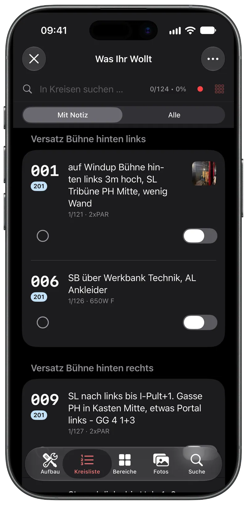
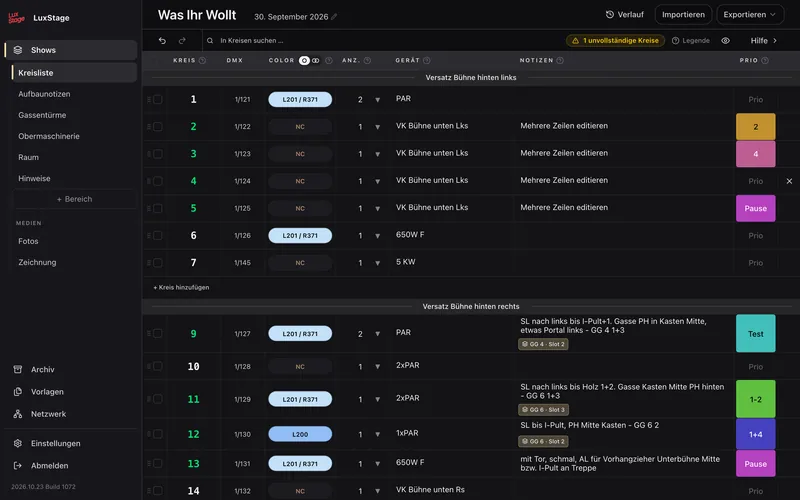
[PLATZHALTER: Entwickelt von einem Lichttechniker am Theater Magdeburg.]
Das Ende der Papierpläne
Dein Einleuchtplan, aber auf dem Smartphone, immer aktuell und mit direkter Verbindung zum Lichtpult.
Heute
Mit LuxStage
Für wen?
Wiederaufnahme im Repertoire
Plan, Fotos und Notizen liegen bereit. Du siehst sofort, wie das Stück zuletzt stand.
Einleuchten auf der Bühne
Notiz, Foto und Steuerung je Kreis. Du gehst die Positionen ab, ohne zu blättern.
Technische Leitung
Ein Stand für das ganze Team, ein Änderungsverlauf und ein Preis pro Haus.
Zur Übersicht für die LeitungSo funktioniert es
Web-App und iOS-App greifen auf dieselben Daten zu.
Aufbau und Einleuchtpositionen legst du in der Web-App an. Dokumentiere das Setup mit Fotos oder einem gezeichneten Plan.
Der Aufbauplan enthält alle Infos zu Geräten, Beleuchtertürmen und zur Bestückung der Obermaschinerie.
Mit der iOS-App gehst du durch die Positionen, siehst alle Infos zu jedem Kreis und steuerst direkt per OSC das Pult.
Funktionen
Kreisliste
Kreise nach Bühnenposition und DMX-Adresse. Colors, Geräte und Notizen an einem Ort, per Drag & Drop sortierbar.
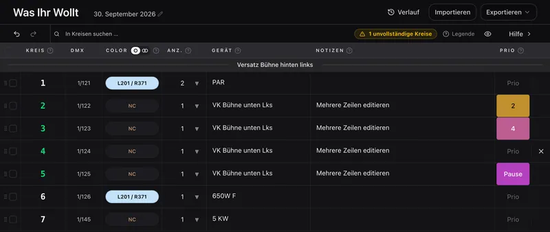
Import aus Eos
Eos-Kreisliste als CSV importieren. Aktive Kreise erkennt LuxStage automatisch.
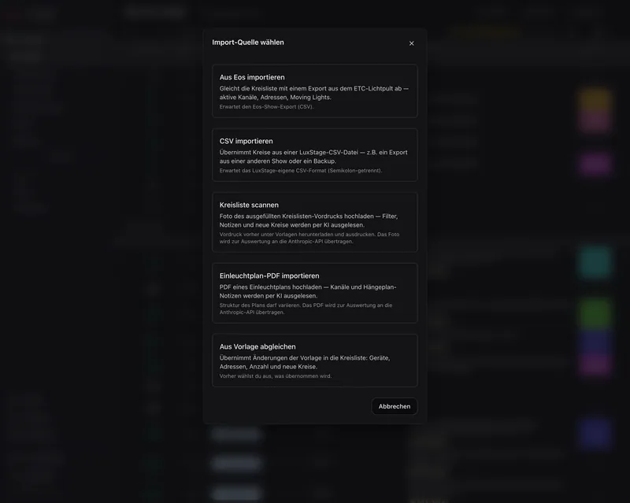
Notiz und Foto je Kreis
Aufbausituation, Kabelführung, Besonderheiten: direkt mit der iOS-App fotografiert und am Kreis abgelegt.
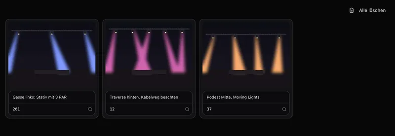
Steuern am Pult
Im Einleuchtmodus sendet der Schalter je Kreis per OSC Full oder Out an dein Eos-Pult. Das Numpad nimmt freie Kommandos.
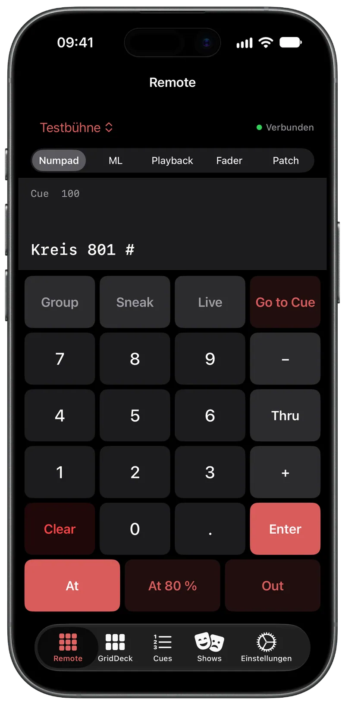
Ein Stand für alle
Alle im Team arbeiten auf denselben Daten. Die Anwesenheit anderer siehst du sofort, abgehakte Kreise sofort in der iOS-App, geänderte Inhalte sind nach dem Speichern auf allen Geräten da.
PDF-Export
Der Einleuchtplan mit Kreisliste, Aufbaunotizen, Zeichnung und Fotos mit einem Klick als PDF, druckfertig für die Bühne.
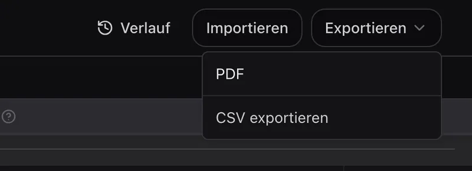
Blick in die App
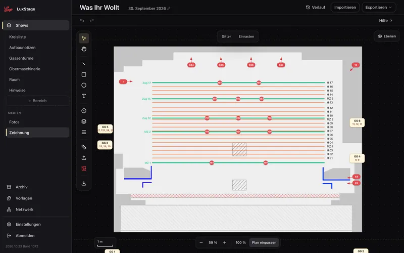
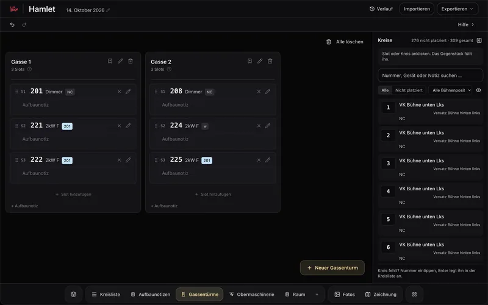
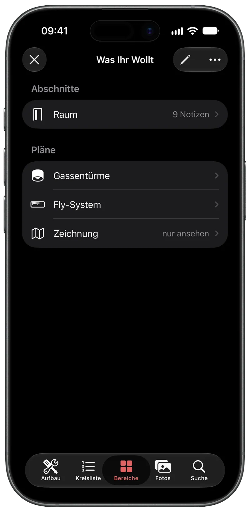
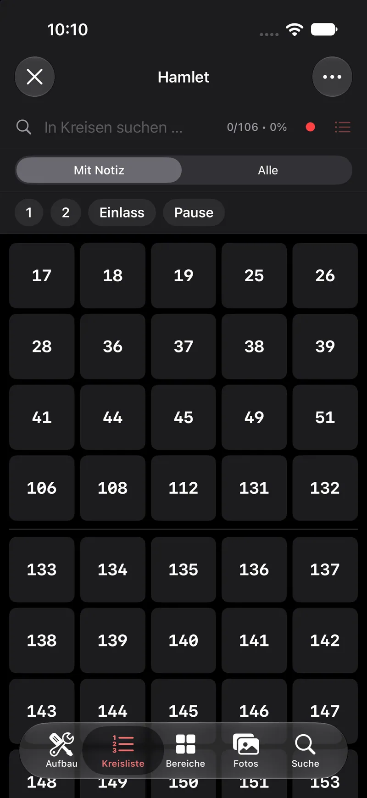
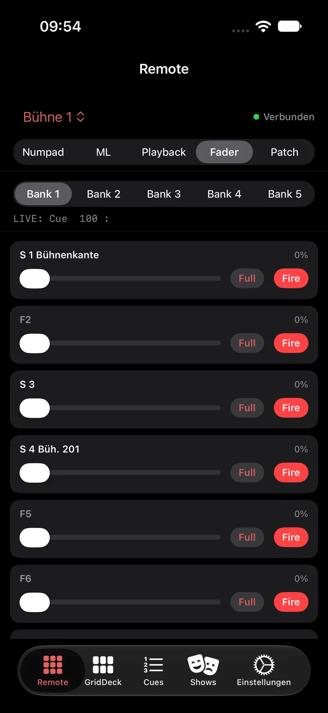
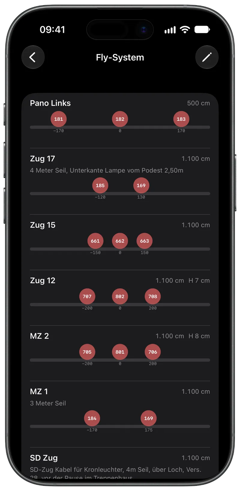
Preise
Team
Für beliebig viele Nutzer. Die Apps sind kostenlos.
29 € / Monat
oder 290 € / Jahr
Preise ohne Umsatzsteuer (Kleinunternehmer, § 19 UStG). Einzelheiten in den AGB.
Team anlegen & 1 Monat testenCommunity
Stell deine Fragen direkt in der Community, tausch dich mit anderen aus dem Lichtdepartment aus und gib Feedback für neue Funktionen. Ohne Anmeldung bei LuxStage.
Discord beitretenFAQ
Die Web-App ist das Herzstück: Hier legst du Shows an und dokumentierst sie. Die iOS-App ist nativ in SwiftUI entwickelt und läuft direkt auf iPhone und iPad – ohne Browser. Sie ist für den Einsatz auf der Bühne optimiert.
Die Web-App läuft auf Mac, Windows, iPad und iPhone im Browser. Die native iOS-App unterstützt iPhone und iPad ab iOS 26.
Sie ist in Vorbereitung und kommt in Kürze in den Google Play Store. Bis dahin kannst du LuxStage auf Android im Browser nutzen.
Für Plan, Fotos, Notizen und Zeichnung nicht. Das Steuern am Pult per OSC funktioniert mit ETC Eos. Den Import nutzt du, wenn du eine Kreisliste als CSV aus Eos exportierst – du kannst die Kreise auch von Hand anlegen.
Aus Eos importierst du die Kreisliste als CSV. Außerdem kannst du aus CSV oder einer Vorlage importieren. Foto und PDF werden per KI ausgelesen, dafür gehen die Inhalte an einen KI-Dienst; das Ergebnis prüfst du vor dem Übernehmen. Notizen und Fotos ergänzt du danach pro Kreis.
Ein Team testet einen Monat kostenlos, ohne Zahlungsdaten. Der Test endet automatisch und wird nicht von selbst zum Abo. Danach kostet es 29 € pro Monat oder 290 € pro Jahr, ohne Umsatzsteuer (§ 19 UStG), für das ganze Team. Die Apps sind kostenlos.
Alle im Team, die Zugang haben. Eine Rollenverwaltung mit unterschiedlichen Rechten gibt es noch nicht. Alle 10 Minuten sichert LuxStage einen Stand (bis zu 50 je Show), den du zurückholen kannst. Änderungen lassen sich außerdem rückgängig machen.
Der Server und die Daten liegen bei Hetzner in einem Rechenzentrum in Deutschland. Die Einzelheiten stehen in der Datenschutzerklärung und im Vertrag zur Auftragsverarbeitung (AVV).
Zum Lesen ja. Die iOS-App zeigt zuletzt geladene Shows, Kreise und Notizen auch ohne Serververbindung an. Fotos sind offline nur eingeschränkt verfügbar. Die Web-App braucht eine Verbindung. Alles, was Daten verändert, braucht eine Verbindung.
Ja, alle im Team sehen denselben Stand. Eine Show bearbeitet immer nur eine Person gleichzeitig, alle anderen sehen mit. Wer bearbeiten will, bittet um Übernahme. So werden Änderungen nicht überschrieben.
Ja, jederzeit zum Ende des laufenden Abrechnungszeitraums. Bis dahin bleibt der Zugriff vollständig erhalten. Du kündigst im Kundenportal oder über die Seite „Verträge kündigen“.
Du kannst dein Team jederzeit zur Löschung beantragen. Der Ablauf steht auf der Seite „Konto löschen“.
Nein. LuxStage ist keine Konsole. Cues und Looks programmierst du weiter am Pult; LuxStage zeigt die Cueliste an und steuert Kreise und Cues. Dazu dokumentiert es den Aufbau und das Einleuchten.
LuxStage entsteht aus der Praxis eines Beleuchters. Mehr dazu auf der Seite „Über LuxStage“.
Bereit?
Lege auf luxstage.app dein Team an und starte direkt – im Browser und auf dem iPhone.